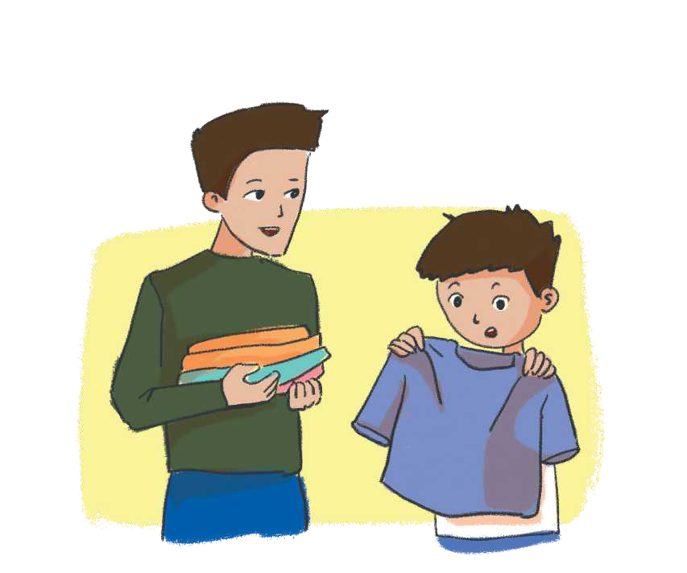

TEMATIKA 3: PLANIFIKIMI
2.UNË NDIHMOJ NË FAMILJE

Vëllai i madh i Diellit po rregullonte rrobat e tij, sipas porosisë së mamit. Pasi sistemoi rrobat e verës dhe të dimrit, ai la mënjanë disa rroba, që tani i rrinin të vogla. Mami i tha që t’ia jepte Diellit, për t’i përdorur ai.
Dielli u mërzit dhe i tha mamit se nuk i pëlqente që gjithmonë vishte rrobat e përdorura të vëllait më të madh. Mami i tha se që të gjithë duhet të kontribuonin për ekonominë e familjes.